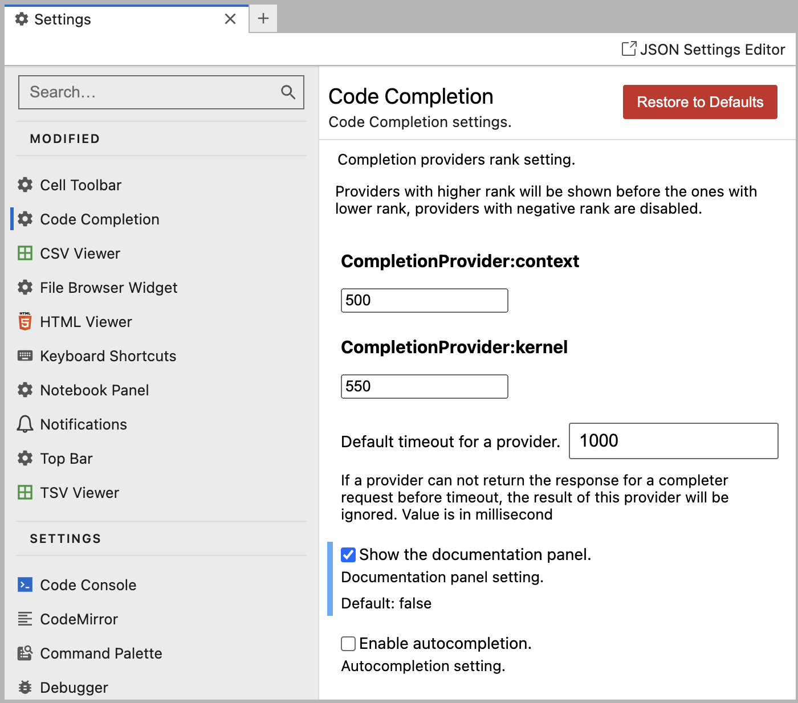

Day2: 파이썬 버전확인하기 - jupyterlab-desktop
강의영상 요청하기
1 파이썬 버전확인하기
- 기본명령
python --version - 두 환경 (base), (first)에서 파이썬 버전을 확인하자.
- 코랩의 파이썬 버전을 확인해보자.
2 (base) 판다스 버전확인
- 우리의 무기1: pip list
pip list너무많죠?
pip list | grep pandas어때요?
- 우리의 무기2: conda list
conda list - 우릭의 무기3: 파이썬에서
import pandas as pd
pd.__version__3 (first) – pandas X
- first에 판다스가 설치되었는지 살펴보자.
- 우리의 무기1: pip list
pip list- 우리의 무기2: conda list
conda list - 우릭의 무기3: 파이썬에서..
import pandas as pd # 에러나겠죠?- 두 환경은 그냥 다른 컴퓨터라고 믿으세요 (못 믿겠다면?)
두 개의 환경을 바꿔가면서 컨트롤 할 수 있어야 합니다~
4 py310_pip_pd – 생성
- 새로운 환경 py310_pip_pd를 생성하자.
(base) guebin@cgb3-desktop:~$ conda create -n py310_pip_pd python=3.10
(base) guebin@cgb3-desktop:~$ conda activate py310_pip_pd
(py310_pip_pd) guebin@cgb3-desktop:~$ python --version5 py310_pip_pd– pandas 설치
- 새로운 환경 py310_pip_pd 에 판다스를 설치하자.
- 이상한곳에 깔지 마시고요..
py310_pip_pd컴퓨터에 까세요
- 버전을 확인
6 py310_pip_pd15
- 새로운 환경 py310_pip_pd15 을 생성하고 거기에서 판다스를 설치하자. 그런데, 버전은 1.5 로 고정하여서..
(base) guebin@cgb3-desktop:~$ conda create -n py310_pip_pd15 python=3.10
(base) guebin@cgb3-desktop:~$ conda activate py310_pip_pd15
(py310_pip_pd15) guebin@cgb3-desktop:~$ pip install pandas==1.5- 파이썬과 판다스 버전을 확인
- 판다스 import 가능? (ㄴㄴ..)
설치가 실패되는 경험을 해보기
7 py310_conda_pd15
- 새로운 환경 py310_conda_pd15 을 생성하고 거기에서 판다스를 설치하자. 그런데, 버전은 1.5 로 고정하여서..
(base) guebin@cgb3-desktop:~$ conda create -n py310_conda_pd15 python=3.10
(base) guebin@cgb3-desktop:~$ conda activate py310_conda_pd15
(py310_conda_pd15) guebin@cgb3-desktop:~$ conda install -c conda-forge pandas==1.5- 파이썬과 판다스 버전을 확인
- 판다스 import 가능? (ㅇㅇ..)
conda install vs pip install 의 차이점을 느끼셔야 합니다!!
- 관찰결과1: conda install 이 좀 더 느리다. (답답할때가 있음)
- 관찰결과2: conda install 이 좀 더 충돌을 관리하면서 설치한다.
8 conda env list
- 지금까지 만든 환경을 보고 싶다면?
conda env list 9 동일한 코드, 다른결과 (1)
- 현재 아래의 env 중에서
py310_pip_pdpy310_pip_pd15py310_conda_pd15
판다스를 쓸수있는 환경은 아래와 같다.
py310_pip_pdpy310_conda_pd15
- 각각의 환경에서 아래의 코드를 실행한다.
df = pd.DataFrame({'A':[2143,2143],'B':['-',3456]})
df.map(lambda x: 0 if x == '-' else x)- 어? (기억하고 싶지 않은 흑역사: https://guebin.github.io/DV2023/posts/13wk-2.html)
- 어쩔까요?
pip install pandas -U # 이거 맞어?- 판다스버전만 올린거지.. 다른버전은 그대로..
py310_conda_pd15을 수정해서..py310_pip_pd와 동일한 코드결과를 얻었지만- 두 환경이 같다고 볼 수는 없다.
설치가 잘 되었지만, 동일코드에서 다른결과가 나오는 경우 (버전업그레드로 인해..)
10 제 컴퓨터에서는 안돼요
- 학생들 질문: 제 컴퓨터에서는 안되는데요.. 어쩌죠?
- 답변1: 코랩에서 하세요..
- 학생들 질문2: pip install pandas 해도 안되는데요, 어쩌죠?
- 답변1: 코랩해서 하세요..
- 진짜 많이 겪는 상황: 저는 꼭 제 노트북으로 해야겠습니다.. -> 아나콘다 쓰시나요? -> 쓰긴쓰는데…….. -> 환경분리해서 실습했어요? -> ????? -> 제가 볼게요.. (찾아보니까) base에 있음..
- 답변2: 일단은
pip install pandas -U해보세요
- 답변2가 적절할까?
- 가장 좋아하는 답변: 환경 새로 파세요
- 최악의 상황
- 일단 아나콘다는 깔아놓았음.
- 잘 몰라서
(base)상태에서 이것저것 깔기 시작함. - 교수랑 코드 “똑.같.이.” 쳤는데 내 컴퓨터에서는 안됨.
- 교수가 맥이라서 그런가보다 하고 인터넷에서 해결책 찾기 시작함.
- 뭐 하라는 대로 해서 이제까지 해결해 왔음. (버전은 점점 엉키기 시작함)
- 안되는건 잘하는 선배찾아가서 물어봤는데 귀신같이 해결해줌. (하지만 버전은 점점 더 엉키고 있음)
- 그런데 또 문제가 생겼고 이제는 해결못하겠음.
- 교수한테 찾아감 -> 교수가 해준다면서
(base)에서 새로운 환경(py310_pip_pd)을 만들어서 이것저것 시도해 봄. - 성공하면 다행인데, 실패함1
- 이건 방법이 없다며 아나콘다를 지우고 재설치 시도. 그런데 윈도우에서는 아나콘다 지우는게 까다로움. (먼가 설정이 자꾸 남아있단 말이에요)
- 새로 계정만들어서 아나콘다 설치시도 -> 실패
- 교수도 사실 윈도우 잘 모른다고 하면서 회피.
- 포맷
- 1로 다시 돌아간 다음 아나콘다 깔고 1-13을 반복함.
- 제발 (base)에 패키지 좀 설치하지 마세요..
언제 pip install을 쓰고 언제 conda install을 써야할까? 답은없어요. 저는 대충 아래와 같이 합니다. (해보고 수틀리면 그냥 환경날리세여)
- 만만한 패키지는 pip install 로 설치: numpy, pandas
- 까다로운 패키지는 conda install 로 설치: torch, transformers, autogluon
11 가상환경 관리
- 가능하면 프로젝트별로 환경을 분리하는게 좋다.
- 많은 종류의 패키지가 한 환경에 존재할수록, 그들을 조율하기는 점점 힘들어진다.
- 하나의 환경에 모든 패키지를 때려밖아 설치하는건 패키지 충돌나라고 기도하는 꼴이다.
(base) 에 패키지가 몰릴 경우 위험함
12 동일한 코드, 다른결과 (2)
- 십년감수: 저 진짜 식겁했어요..
- 지금!! (2024.12.27) 코랩에서 이거 해보세요 – 실행안됨
!pip install evaluate
import numpy as np
import evaluate
logits = np.array(
[[ 2.7346244, -3.1177292],
[ 2.7103324, -3.1362345],
[ 2.7464483, -3.0521457],
[ 2.7195318, -3.122628 ],
[ 2.7138977, -3.1041346],
[ 2.7398622, -3.1098123],
[ 0.0657177, -0.0930362],
[-2.7668718, 3.0918367]]
)
predictions = logits.argmax(axis=1)
references = labels = np.array([0,0,0,0,0,0,1,1])
rec = evaluate.load("recall")
rec.compute(predictions = predictions, references = references)- 수업들을때 잘 되지 않았어요?
13 Github – 집단지성의 끝판왕
- 구글코랩처럼 비밀저장소를 만드는게 아니고 공개저장소를 만들면 개발자 입장에서는 뭐가 좋을까?
- https://github.com/huggingface/evaluate
- https://github.com/scikit-learn/scikit-learn ## 어우 큰일날뻔 했어요 진짜..
- 해피엔딩? (전 엄청 보수적이라서요.. 별로 최신버전 쓰고싶진 않네요)
너무 발전속도가 빠른 패키지의 경우 살짝 보수적인 버전을 쓰는것도 도움이 된다.
14 일반/sudo/슈퍼 유저
- sudo 아시죠?
- 3가지 종류의 유저가 있음
- 일반유저:
sudo를 쓸 수 없는 유저 - sudo 그룹유저, sudo 유저:
sudo를 쓸 수 있는 유저, 평소에는 일반유저인듯 보이지만sudo를 쓰는 순간 슈퍼유저(=루트유저)의 권한을 써서 행동할 수 있다. - 슈퍼유저 = 루트유저: 모든 행동이 슈퍼유저의 권한으로 하는 행동임!!
- 심술을 좀 부려볼까요?
- 차상진 cktkdwls111
- 이상민 gkem0222
- 신다빈 teq040810
15 git 설치
- 이 레포지토리 클론할수있어요?
- git이 없죠?
- 설치할수있어요?
apt install git- 깔아줄까요?
16 루트유저가 보는 세상
/root
- 루트사용자의 홈 디렉토리
- sudo로도 들어갈 수 없음
/etc
- 리눅스 시스템 전반적인 환경설정 파일들을 모은 디렉터리임.
- 이 디렉터리의 모든 파일은 텍스트형식임.
/etc/password사용자 계정정보
/home
- 사용자의 홈 디렉터리
/mnt
- 다른 파일 시스템이 파일 시스템에 연결되거나 마운트 되는 위치
/media
- CD, USB 장치가 파일 시스템에 연결되거나 마운트되는 위치임
/bin
- 시스템 부팅과 실행에 필요한 바이너리(=윈도도의 실행파일=macOS의 애플리케이션)들을 포함
/lib
- 시스템 프로그램에서 사용하는 공유 라이브러리가 저장. 윈도우즈의 DLL과 비슷한 것.
/usr
사용자가 사용하는 모든 프로그램과 지원파일들 (Program files + 프로그램들의 설정값)
/usr/bin리눅스 배포판이 설치한 실행 프로그램들이 있다. (여기에 R이 깔린다!!)- hp-align, hp-check, hp-config_usb-printer …
- X11
- vi
- gcc
- su, sudo
- sar
- ssh, ssh-agent, ssh-keygen, ….
- nvidia-smi
/usr/lib여기에는/usr/bin에 있는 프로그램들을 위한 공유라이브러리가 저장된다. 여기에 R folder가 있다. (R패키지는 여기말고 다른데 깔림)/usr/local/bin소스코드로 컴파일된 파일, 보통 비어있음/usr/local/lib/R/site-libraryR패키지가 설치되어있음, 예를들면 tidyverse
17 ls의 이름바꾸기
- 루트유저는 생각보다 많은걸 할 수 있어요
- 무섭죠? 그래서 그냥 sudo로 돌아가길 원합니다 보통은..
루트유저의 권한을 이해
18 컴퓨터란?
- 개념: 모든것은 파일과 폴더의 집합이다.
- 183번 컴퓨터로 가보자.
- 우분투컴퓨터에 guebin이라는 유저를 새롭게 추가했다 = /home/guebin/ 를 만듦
- 우분투에서 깃을 설치했다 = 우분투에서 sudo apt-get install git을 실행했다. = /usr/bin/에 git이라는 파일이 생겼다. = /usr/bin/git 생성
- ls는 우분투에 이미 내장되어있는 기능이다. = ls는 우분투에 이미 내장되어있는 명령파일이다. = 우분투를 설치하면 /usr/bin/에 ls라는 파일이 이미 있다.
- 우분투에 guebin이라는 유저를 등록했다. 이후에 guebin이라는 유저가 아나콘다를 설치했다. = 우분투에 guebin이라는 유저를 등록했다. 이후에 guebin이라는 유저는 아나콘다를 이용하여 가상의 (base)환경을 만들었다. = /home/guebin/anaconda3/폴더가 만들어졌다는 의미.
- 우분투에 guebin이라는 sudo유저를 등록했다. 이후에 guebin이라는 sudo유저가 루트권한을 이용하여 git을 설치했다. = /home/guebin/ 이 만들어짐 + /usr/bin/git 생성
19 Anaconda
- 아래를 실행하고 관찰해보자.
(base) guebin@cgb3-desktop:~$ cd anaconda3/
(base) guebin@cgb3-desktop:~/anaconda3$ ls- 이게 무엇인것 같나요?
- 이제 다시 아래를 실행하고 관찰해봅시다.
(base) guebin@cgb3-desktop:~$ cd anaconda3/
(base) guebin@cgb3-desktop:~/anaconda3$ cd envs/
(base) guebin@cgb3-desktop:~/anaconda3/envs$ cd first
(base) guebin@cgb3-desktop:~/anaconda3/envs/first$ ls- 이건 뭐인것 같아요?
컴퓨터/가상컴퓨터에 대한 해석
20 git 설치하기
- 루트유저가 횡포를 부려서 다시 깃을 지웠습니다.
sudo apt remove git- 치사해서 내가 깝니다
conda create -n git
conda activate git
conda install -c conda-forge git- 나는 일반유저인 guebin 이지만 콘다환경 한정하여 루트유저급
21 폴더의 레벨
- 183번 컴퓨터에는 4개의 중첩된 컴퓨터(=폴더)가 존재한다.
- root우분투
- guebin우분투
- guebin우분투-(base)
- guebin우분투-(py310)
- 영향력은 하위폴더에 행사할 수 있다.
22 난 어디에 깃을 설치했어?
# 문제1: 183번 컴퓨터에는 4개의 중첩된 컴퓨터(=폴더)가 존재한다.
- root우분투
- guebin우분투
- guebin우분투-(base)
- guebin우분투-(py310)
아래의 명령을 통하여 깃을 설치했다.
(base) sudo apt-get install git 깃은 어디에 설치되어있는가?
정답은 1번입니다! 깃이 어디에 깔리는지를 생각하세요!
#
# 문제2: 183번 컴퓨터에는 4개의 중첩된 컴퓨터(=폴더)가 존재한다.
- root우분투
- guebin우분투
- guebin우분투-(base)
- guebin우분투-(py310)
아래와 같이 깃을 설치했다.
(py310) sudo apt-get install git 깃은 어디에 설치되어있는가?
정답은 1번입니다! 깃이 어디에 깔리는지를 생각하세요!
#
# 문제3: 183번 컴퓨터에는 4개의 중첩된 컴퓨터(=폴더)가 존재한다.
- root우분투
- guebin우분투
- guebin우분투-(base)
- guebin우분투-(py310)
아래의 명령을 통하여 깃을 설치했다.
(py310) conda install -c conda-forge git 깃은 어디에 설치되어있는가?
정답은 4번입니다!
#
# 문제4: 183번 컴퓨터에는 4개의 중첩된 컴퓨터(=폴더)가 존재한다.
- root우분투
- guebin우분투
- guebin우분투-(base)
- guebin우분투-(py310)
아래와 같이 깃을 설치했다.
(base) conda install -c conda-forge git
## 문제를 위해서 만들긴 했는데요, 제발 (base)에 머 설치하지 좀 마세요깃은 어디에 설치되어있는가?
정답은 3번 입니다!
#
우리가 예전에 만든 publish.sh 파일 있잖아요?
- 이걸 프로그램이라고 해석할 수도 있죠? (그렇다고 칩시다)
- 그럼 이 프로그램은 어떤 컴퓨터에 설치되었을까요?
- 어떤 폴더에 이 파일을 넣느냐에 따라 다르겠죠..
23 환경삭제
- 이제 183컴퓨터를 떠날준비를 합시다.
- 아나콘다 환경을 삭제하는 방법
가상환경에 대한 저의 이해방식
- 가상환경은 폴더/파일의 집합으로 이해가능
- 아나콘다에서 환경삭제도 폴더삭제로 대체하여 생각할 수 있음
24 rpy2
- 186 컴퓨터 갑시다.
- sudo 유저도 아니고 슈퍼유저에요!!
- 아래를 실행: R에 필요한 ubuntu-level의 프로그램
apt-get update
apt-get install -y \
libxt6 \
libxrender1 \
libcairo2 \
libx11-dev \
libxt-dev \
libxrender-dev \
libcairo2-dev- 아래를 실행
(base) conda create -n rpy2
(base) conda activate rpy2
(rpy2) conda install r::rpy2
(rpy2) conda install -c conda-forge notebook
(rpy2) pip install numpy- 아래를 실행.. (포트는 학번제외하고 하나 쓰세요)
jupyter lab --ip="0.0.0.0" --port=12345 --no-browser --allow-root- 주피터에서 이걸 치고 코딩해보세요
import numpy as np
import rpy2
%load_ext rpy2.ipython- 당장 이거 3개만 알면 쓸만해요
%%R%R -i ???%R -o ???
- 응용..
%%R
set.seed(123)
x <- 1:10
y <- 2.5 * x + rnorm(10, mean = 0, sd = 2) # y = 2.5x + noise
plot(x,y)
model <- lm(y ~ x)
beta <- model$coef
print(beta)%R -o beta- 이거는 하나의 메모장에 두 개의 커널이 붙어있는 경우입니다.
- R,Python의 여러패키지 조합은 맞추기 어려워서요.. 스스로 환경 계속 새로 파면서 노가다해봐야합니다
rpy 환경 구축 및 실습
25 주피터랩 2개 켜기
- first 에서 하나.. rpy2 에서 하나..
- 매번 이런거 하기 어렵죠?
26 tmux 이용하기
- tmux 가 뭔가?
python보다ipython이 좋잖아요?- 일반적인
terminal보다tmux가 좋아요!
- 이것만 기억하세요
tmux lstmux,tmux new -t asdfctrl + b\(\to\)dtmux attach -t 0,tmux attach -t asdfctrl + d
27 주피터랩 평생 켜놓기
- 세 가지 방법이 있음
- 백엔드에서 실행
nohup을 이용tmux를 이용 (이것만 알면됩니다)
28 포트정리 (lsof)
- 내가 어떤포트에 어떤환경의 주피터를 켰는지 헷갈린다면?
- lsof 프로그램 설치
apt-get install lsof
apt install lsof - 1307 포트를 사용하는 프로그램이 있는지 파악
lsof -i :1307결과는 아래와 같은 예시로 나옴
COMMAND PID USER FD TYPE DEVICE SIZE/OFF NODE NAME
jupyter-l 862165 root 6u IPv4 383551982 0t0 TCP *:1307 (LISTEN)
jupyter-l 862165 root 12u IPv4 383671448 0t0 TCP 8c8831330c68:23052->210.117.173.181:59663 (ESTABLISHED)
jupyter-l 862165 root 16u IPv4 383628690 0t0 TCP 8c8831330c68:23052->210.117.173.181:59664 (ESTABLISHED)
jupyter-l 862165 root 29u IPv4 383612831 0t0 TCP 8c8831330c68:23052->210.117.173.181:59720 (ESTABLISHED)
jupyter-l 862165 root 34u IPv4 383671463 0t0 TCP 8c8831330c68:23052->210.117.173.181:59667 (ESTABLISHED)- 각자해볼것: ssh 접속시 사용하는 포트 제외하고 나머지 포트를 쓰고 있는 프로그램은 삭제
kill {PID}위의 예시의 경우
kill 862165- 주피터랩 평생켜놓기 + 끄기 (이거 자유자재로 할 수 있어야함)
- PID를 조회하는 다른방법
ps aux | grep jupyter주피터 커널 관리
29 R 전용 개발환경 만들기
- 아래를 실행
conda create -n renv
conda activate renv
conda install r::r-essentials- 여기에서 conda install -c conda-forge r-essentials로 인하여 R, Python, Jupyter 가 모두 최신버전으로 설치된다.
- 또한 R에는 이미 tidyverse, IRkernel 등의 패키지가 기본으로 깔려있다.
- 아래를 실행.. (포트는 안겹치게)
jupyter lab --ip="0.0.0.0" --port=12345 --no-browser --allow-root- R 노트북이 잘 열리는가?
30 R은 어디에 있음?
- R이 설치된 경로를 찾아보자.
- 수틀리면 이 R을 지우면 된다.
R이 설치될 수 있는 3가지 시나리오
sudo apt-get install r-base # r 공식홈페이지, 수틀리면 리눅스 포맷
(base) conda install -c conda-forge ... # 수틀리면 아나콘다 삭제해야함.
(renv) conda install -c conda-forge ... # 수틀리면 가상환경 삭제 31 (base)에서 R 실행
- 원래는 불가능한 일이겠죠?
- 억지로 가능하게 하려면?
32 Rstudio 사용하기
- 아래를 이용하여 Rstudio를 설치 // base환경에서 실행하든 renv환경에서 실행하든 상관없음 (왜?)
apt-get install gdebi-core
wget https://download2.rstudio.org/server/jammy/amd64/rstudio-server-2022.12.0-353-amd64.deb
gdebi rstudio-server-2022.12.0-353-amd64.deb- grst가 만든 rstudio-server-conda를 클론
git clone https://github.com/grst/rstudio-server-conda.git- ~/rstudio-server-conda/local/start_rstudio_server.sh 의 맨아래를 아래와 같이 수정
~/rstudio-server-conda/local/start_rstudio_server.sh
...
/usr/lib/rstudio-server/bin/rserver --server-daemonize=0 \
--www-port=12345 \
--auth-minimum-user-id=0 \
--secure-cookie-key-file=$COOKIE_KEY_PATH \
--server-pid-file="$CWD/rstudio-server.pid" \
--server-data-dir="$CWD/rstudio-server" \
--rsession-which-r=$(which R) \
--rsession-ld-library-path=$CONDA_PREFIX/lib \
--rsession-path="$CWD/rsession.sh" \
--server-user $USER \
--database-config-file "$CWD/database.conf" \
$REVOCATION_LIST_PAR- start_rstudio_server.sh를 실행
- 어디서 실행해야 할까요??
base?renv? - R이 설치된
renv에서 해야함 (그래야 커널이랑 붙을테니까)
R을 이용하는 개발환경 구축
33 여러가지 프로그램
- 우분투자체의 프로그램
- 우분투 자체의 프로그램 예시: git, quarto, python, R, anaconda, vi, ssh, wget, vscode
- 우분투 자체의 프로그램은 다시 모든 유저가 영향을 받는 받는 프로그램과 그렇지 않은 프로그램이 있음
- 우분투 자체의 프로그램을 설치하는 방법들
sudo apt install git
sudo apt-get install git
sudo dpkg -i quarto-1.4.533-linux-amd64.deb
bash Anaconda3-2019.03-Linux-x86_64.sh
sudo gdebi rstudio-server-1.2.5033-amd64.deb
# 기타 파일을 넣을 수 있는 모든 방법 (예를들면 압축파일 다운로드후 풀기) - 아나콘다(=base)에 종속된 프로그램
- 아나콘다내에 종속된 프로그램의 예시:
conda,python,R,jupyter - 아나콘다에 종속된 프로그램은
anaconda3폴더안에 있음.
- 아나콘다환경(=py310)에 종속시킬 수 “있는” 프로그램
- 아나콘다내에 종속된 프로그램의 예시:
python,R,jupyter - 아나콘다환경에 종속된 프로그램은
anaconda3/envs/py310와 같은 형식의 폴더안에 있음.
- 파이썬에 종속된 프로그램 (=파이썬패키지=파이썬라이브러리=파이썬모듈)
- 파이썬에 종속된 프로그램 예시:
numpy,pandas - 얘네들이 어디에 깔리는지는 그때그때 다름
- 지우는 방법도 그때그때 다르겠지? (젤 편하고 깔끔하게 지우려면?)
- R에 종속된 프로그램 (=R패키지=R라이브러리)
- R에 종속된 프로그램의 예시:
tidyverse - 얘들이 어디 깔리는지도 그때그때 다름
- 지우는 방법도 그때그때 다르겠지? (젤 편하고 깔끔하게 지우려면?)
우분투에 설치하는 프로그램 종류
34 jupyterlab-desktop
- 주피터랩 app! (저는 좋더라고요)
- 굳이 로칼에 파이썬을 설치하진 않고 remote 로만 써요
- 아래를 설정하는걸 좋아함. (취향차이??)

주피터랩서버를 이용한 개발환경 구축
Footnotes
4학년쯤에는 이미 (base) 가 손쓸 수 없는 상태로 깨져있는 경우가 허다함. 공부를 열심히 한 학생일수록 그러함. 이럴경우 소생가능성이 없음↩︎